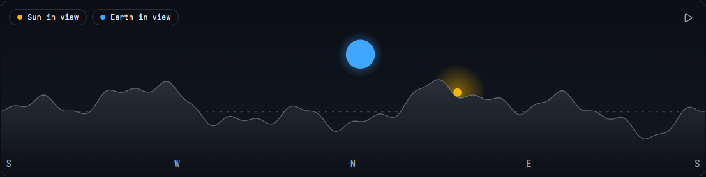
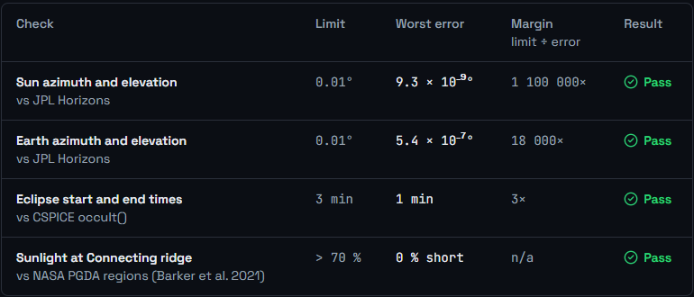
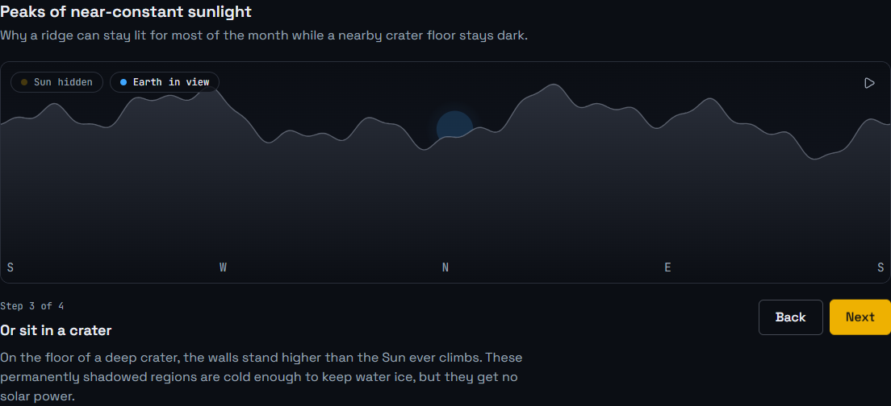

See the light. Keep the link.
Team DevsLunares
Carlos Altán · Pablo Vásquez · Jonathan Tubac · Ángel Sanabria · Joao Castillo · Juan Montenegro
NASA Space Apps Challenge 2026 · Challenge: Lunar Landing Site Navigator

LRO LOLA elevation models: 5 m/pixel south pole sites (NASA Goddard PGDA), polar and global maps (PDS).
Rays across the terrain for every azimuth, with the Moon's curvature: about 2.9 km of drop at 100 km.
NAIF SPICE kernels (NASA JPL): DE440 ephemeris in the MOON_ME frame.
Visible fraction of the Sun's 0.53° disc and Earth's 1.9° disc, minus eclipses.
Metrics, events, power and delays, served to the web app.
Checked against JPL Horizons and NASA PGDA. Candidate sites from NASA's Artemis III landing regions.
Same terrain, same year: the right spot nearly doubles the hours of power and adds contact. LUMEN finds it in seconds.


Guided tours explain peaks of near-constant sunlight, why Earth rises and sets, and a lunar day in 30 seconds.
Next: compare sunlight with published tables value by value, add 5 m terrain for more sites, verify every catalog site.
Plan where the light stays and the link holds.